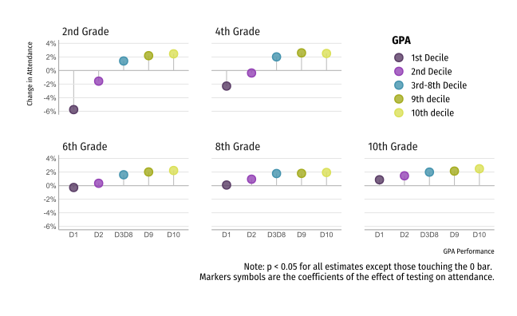
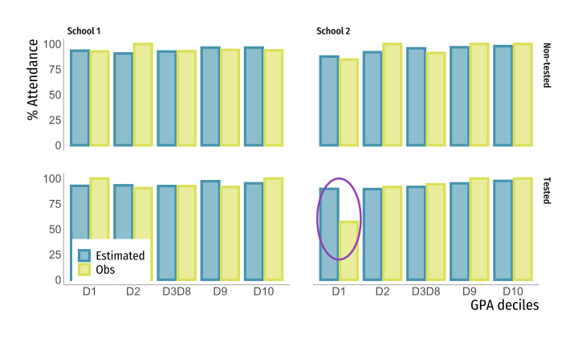

Not only lower-performers attend less on the day of the test, but high-performers attend more


1 McCombs School of Business, The University of Texas at Austin
2 Economics Department, Princeton University
3 Teachers College, Columbia University
Non-representative patterns of attendance can skew how useful test scores measures are for accomplishing their main objective.
In this paper, we study the effect of high-stakes testing on student composition of attendance on the day of the test using rich administrative data from Chile and daily attendance. By combining an event-study framework and a machine learning prediction approach, we bring together traditional causal inference methods with prediction algorithms to better inform policy.
Understand the average effect of testing on school attendance across grades and performance
Help improve current imputation methods
Identify schools that incentivize non-representative patterns of attendance.
\[Y_{ipsgt} = \sum_{P=1}^5\sum_{T=-4}^5 \tau^{PT}D^{PTG^*}_{ipsgt} + \gamma_{pt} +\alpha_i + \epsilon_{ipsgt}\]
\(Y_{ipsgt}\): Binary attendance for student \(i\), from GPA group \(p\), in school \(s\) and grade \(g\), for day \(t\).
\(D^{PTG^*}_{ipsgt}\): Indicator variable \(\mathrm{I(p = P, t = T, g = G^*)}\), where \(G^*\) is the tested grade.
Students skip school on the day of the test. In lower grades, lower-performers attend less and higher-performers attend more, compared to a regular day. In higher grades, we only observe action at the top of the distribution

There is important heterogeneity betweeen schools. Ex: Two schools which perform similarly, but with different predicted distributions:

We conduct an additional K-means analysis to identify clusters of schools according to their difference in predicted and observed attendance distribution. We find two main clusters, where one of them incentivize the exclusion of lower-performers. Those schools are more vulnerable and have overall lower perfomance.
Not only lower-performers attend less on the day of the test, but high-performers attend more